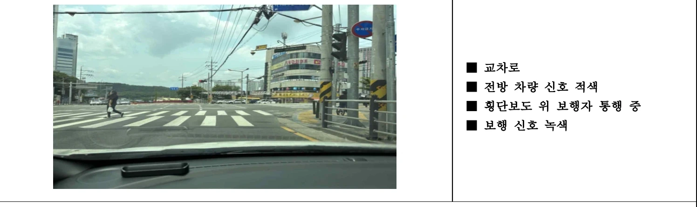

691. In the given situation, which of the following are the two safest ways of proceeding?

- ①Turn right at the intersection without stopping before the stop line or crosswalk, proceeding slowly.
- ②Wait until the pedestrian has finished crossing.
- ③Sound the horn and turn right quickly if a pedestrian is running into the crosswalk.
- ④Stop on the crosswalk to ensure a clear field of vision when turning right.
- ⑤Since the traffic signal ahead is red, make sure you stop, let the pedestrians pass, and then turn right slowly.
Show answer
Answer
② Wait until the pedestrian has finished crossing.
⑤ Since the traffic signal ahead is red, make sure you stop, let the pedestrians pass, and then turn right slowly.
Reference
Appendix 2 of the Road Traffic Act Enforcement Rules. Vehicle traffic lights, red light meaning. 2. When a car or horse wants to turn right, it must first stop right before the stop line, crosswalk or intersection and then turn right without interfering with the traffic of other cars and horses proceeding according to the signal (explained in ① and ⑤). Article 27 (Protection of Pedestrians) Paragraph 1 of the Road Traffic Act. When a pedestrian is passing or is about to cross a crosswalk, the driver of any car or tram must temporarily stop in front of the crosswalk (referring to the stop line where a stop line is installed) so as not to obstruct or endanger pedestrians from crossing (explanation ②, ③, ④).
Reference text is a machine translation for study.